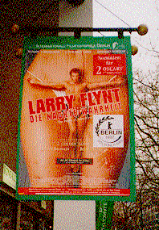
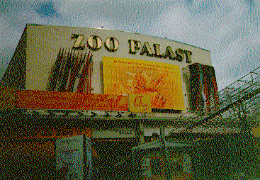

Contents | Features | Reviews | News | Archives | Store

Contents | Features | Reviews | News | Archives | Store
The 47th Berlin
International Film Festival
vs. Larry Flynt: Thoughts on the Festival as it
Nears 50 (1997)
It was no contest, really. From the moment director Milos Forman arrived at Berlin's recently-expanded Tegel Airport on opening day to a frenzy of flashbulbs and two journalists squared off in front of a startled Courtney Love over five minutes of encroached interview time a few days later (they were separated by one of her bodyguards), it was clear that The People vs. Larry Flynt had all the momentum it needed. Of the volumes of press generated from the screenings and interviews, The Frankfurter Rundschau had perhaps the best quip: "Pink, the color of genitalia, and green, the color of money, belong in Flynt's coat of arms, if he were to have one."
Extra screenings even had to be hastily arranged to accomodate audience demand, forcing the festival to shuttle a single print from one projection booth to another as two full houses watched the film. So when The People vs. Larry Flynt was announced to journalists on the afternoon of 24 February as the winner of the grand prize Golden Bear of the 47th Internationale Filmfestspiele Berlin, the usual mixed chorus of boos and cheers sounded almost perfunctory.
Other prizes were greeted with a lustier vocal mix, including Bears to The English Patient's Juliette Binoche (Best Actress, despite what Oscar said), Spike Lee's Get on the Bus (Special Mention, which is festival juryese for "let's not alienate this guy"), and, in the clearest indication since the wall came down that this festival really wants to be a major player in the way Hollywood rolls out its product in Europe, Leonardo DiCaprio (Best Actor, William Shakespeare's Romeo & Juliet). But more on all these high-profile machinations later.
The Flynt flap, which included an ongoing controversy over the poster art chosen for the European ad campaign (see photo), was certainly the highest-profile major story of the festival, but, as usual in Berlin, it wasn't the only one -- not by a long shot. As the second largest film festival in the world (and gaining on Cannes all the time), Berlin is not only a movie lover's dream -- it has a worldwide reputation among filmmakers as an audience-friendly event -- but an increasingly effective worldwide market and (as mentioned) a place for Warner Bros., to use one example of a major Hollywood studio, to throw a lavish post-European premiere party for Mars Attacks! featuring guests of honor Tim Burton and Lisa Marie (who, to be truthful, stuck out in the crowd like the Martians in the White House).
But first, some scene-setting: Berlin the festival is at a crossroads as Berlin the city readies itself to become the capital of the unified country by moving the government from Bonn in May 1999. Cramped for the better part of this decade, the festival has taken great steps in the last 12 months to alleviate some of the pressures caused by lack of space in the venerable Budapesterstrasse headquarters (including commandeering space that used to belong to a shady-looking discoteque). Some walls were re-jiggered and voila! (or achtung!) more room. More room, that is, for the estimated 11,000 guests and participants rubbing shoulders this year, including 3,000 journalists.
Eighty-five thousand people bought tickets to some 400 films in over a dozen cinemas last year. This year, the number of venues increased to 19 (five of which are in the former East Berlin), with the number of participants and moviegoers expected to rise accordingly. All of this was accomplished with the most drastic budget cuts in the 18 years that the festival has been run by Moritz de Hadeln. He did this without apparent harm to the film program themselves, focusing instead on various cost-cutting measures such as the trimming of social events (no more bacchanalian closing night party) and the charging of a modest registration fee -- the first in Berlin festival history.
The programs themselves feature major categories that have solidified over the years. Twenty-five films (and accompanying shorts) make up the aforementioned competetion program, while the esteemed Ulrich Gregor as co-director of the festival oversees the International Forum of Young Cinema (at heart, that is, even as the program entered its 27th wicket). An eclectic and cutting-edge collection called Panorama, capably programmed by Wieland Speck, is split into three subsections: Panorama Special, Panorama Documentary and Panorama Art & Essay (work that apparently doesn't quite fit in Panorama Special or Panorama Documentary).
There's also the European Film Market, which this year featured 90 stands representing 45 countries exhibiting 700 films in 16 theaters (13 for film, three for video). A few dozen new German films are shown in a special sidebar, and a separate festival of children's films from around the world is shown and judged by a panel of their peers.And if that's not enought to keep the businessman or buff occupied, there's a yearly retrospective program, which featured tributes to Kim Novak (who attended the conveniently-programmed European premiere of that new 70mm print of Alfred Hitchcock's Vertigo) and director G.W. Pabst (who's dead).
Once the festival delegate navigates the complex scheduling of the festival (which covers 12 pages in the inaugural magazine and is updated daily in a journal published by the "Moving Pictures" magazine crowd), moviegoing can begin.
Although most of the working journalists from around the world spend the majority of their time seeing the competition films, by and large the American films on offer there have already played in the United States. This year the Hollywood product in competition, and the celebrities on hand to tub-thump them, included The Crucible (director Nicholas Hytner), The People vs. Larry Flynt (director Milos Forman, star Courtney Love), In Love and War (director Sir Richard Attenborough, Chris O'Donnell), The English Patient (director Anthony Minghella as well as Ralph Fiennes, Kristin Scott Thomas, Juliet Binoche, and Willem Dafoe), Get on the Bus (Spike Lee, who pretty much kept to himself and was reported in the daily journal trying to get into a screening without a ticket), Rosewood (director John Singleton), William Shakespeare's Romeo & Juliet (DiCaprio), and Mars Attacks! (which was out of competition). And although listed as a German-Danish-Swedish co-production, Smilla's Sense of Snow (the opening night attraction) played like an awkwardly-plotted Hollywood action film (and was shot in various degrees of English); star Julia Ormond and actor Robert Loggia were the recognizable names on-hand to meet the press. Other luminaries in town for various publicity chores included Lauren Bacall, Alain Delon, Tara Fitzgerald, Polish director Andrzej Wajda (with the competition entry Miss Nobody), Armin Mueller-Stahl, Catherine Deneuve, Ben Kingsley, Warhol factory regular Holly Woodlawn (!!!), director Bruno Barreto (who's new film Four Days in September was picked up for American distribution by Miramax), Motion Picture Association of America topper Jack Valenti (who called Breaking the Waves director Lars Von Trier "one goddamned great filmmaker," which looked on the page both complementary and condescending), and Gérard Depardieu, who came and went so quietly that nobody knew he was there until after he'd left.
This correspondent spent most of his time seeking out the newer, and for American audiences, undoubtedly more obscure art-house films. But what, exactly, does that mean? Tradespeople have taken to calling such work "Specialty" films to separate them from movies like The English Patient, which although technically an independently produced art-house film, is acting more and more like a mainstream item (especially since sweeping the Oscars). Anyway, of the nearly 50 films seen in their entirety or in part, standouts included Czech animator Jan Svankmajer's surrealistically kinky live-action Conspirators of Pleasure, Satoshi Isaka's fake Japanese documentary [focus], the stunningly avant-garde Argentinian thriller Moebius, Alan Berliner's sublime documentary Nobody's Business, Nick Gomez' tough but uncompromising third feature illtown and, 33 years after it ruined his illustrious career, Billy Wilder's monstrously funny and completely subversive Kiss Me, Stupid -- which features, among many other pleasures, one of Kim Novak's very best performances.
Will American audiences get to see any of these films (other than the Wilder, which is on tape -- find it, rent it, buy it, watch it)? Well, if you live in or near a city with a film festival, repertory theater or full-time art-hou...ah, specialty screen or screens, give 'em a call and ask if they're going to play them. Most don't have distributors (yet), so it might be a bit of an economic challenge. But continual patronizing of these establishments will lead to greater influence in booking.
On the human interest front, you can't get this many people in one place without some good stories to tell, some of which are even printable. A projectionist at a cinema in the former east took to complaining about the shape of the prints he'd been sent, while one guy stuffed the ingredients for pate into his print before shipping it so that he'd have a taste of home during the festival. Warner Bros. hired two midgets (or dwarves, as was reported) to leap unannounced onstage at the premiere of Mars Attacks!, while at the other end of the spectrum Texas-based indie filmmaker Steve Bilich (Ruta Wakening) was so inspired by his first trip to Germany that he cadged film from the Kodak and Agfa market stands and a camera from local production house Intervision before heading off to the former east and making two shorts. "I said to myself while I'm here why don't I ... shoot my own movie," Bilich told Moving Pictures. "A lot of my inspiration comes from Wim Wenders." Who may have been in Berlin but wasn't in plain sight.
Going back to the Bears themselves, while one might squawk at the Hollywoodization of Berlin, it was still frustrating to see the Golden Bear best film award go to Larry Flynt and not The English Patient -- which would have given the festival crystal ball status for predicting the Best Picture Oscar winner two years in a row (Sense and Sensibility last go-round) and minted Berlin as the place for Oscar wannabes to be. But the international jury was apparently having none of it, preferring to recognize momentum and a certain kind of share-the-wealth sensibility over temptation.
Yet when all is said and done, de Hadeln, Gregor and the hundreds of dedicated Berlin festival programmers and staff have done a brilliant job of finessing their role in the festival world. Some accuse the Berlin festival of selling out to business interests, but that isn't so: business, as always, is the engine that pulls the train of art, and in that respect Berlin notched up another spectacular success. And, as the event prepares to switch stations, moving to the gigantic Potsdamer Platz complex by the year 2000 (near the Brandenburg Gate, where they're building the new American embassy), the festival seems posed to shake off the short-term economic woes and steer a steady course to the new millenium as the largest international film event of its kind -- starlets and business deals vs. trends and meanings -- in the world.
And how did The People vs. Larry Flynt fare when it opened later in the week? It got creamed by local favorite Til Schweiger, whose much-anticipated German film Knockin' on Heaven's Door opened the same day. Despite publicity, all politics remain local.
Contents | Features
| Reviews | News | Archives | Store
Copyright © 1999 by Nitrate Productions, Inc. All Rights Reserved.